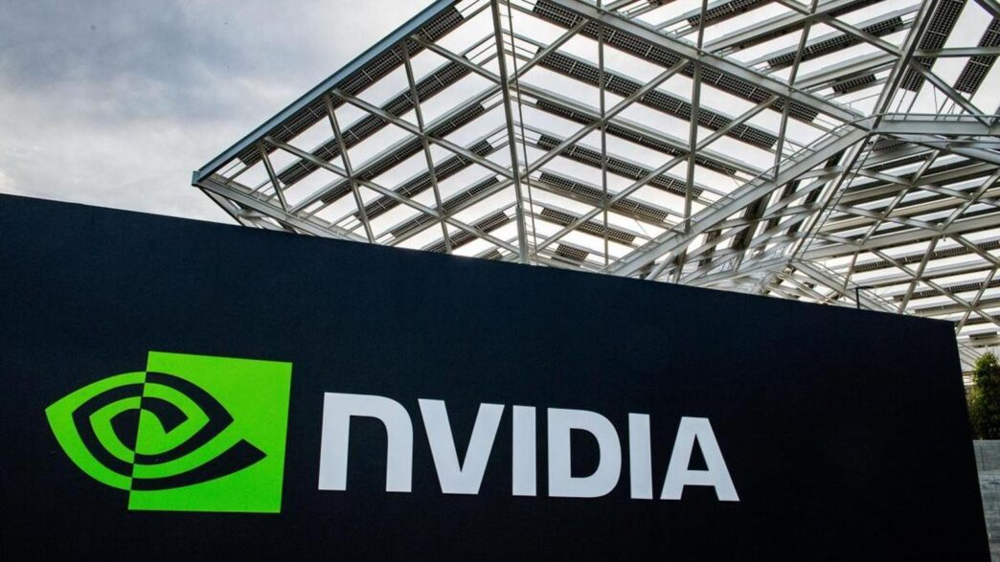

Nvidia invierte 5.000 millones en Intel para unir fuerzas en la era de la inteligencia artificial
En un giro que ha sacudido el mundo de la tecnología, Nvidia ha anunciado una inversión de 5.000 millones de dólares en acciones de Intel, un competidor histórico que atraviesa una de sus etapas más difíciles. La operación también sella una colaboración para el futuro de la inteligencia artificial.
Autor: Juan Cabrera